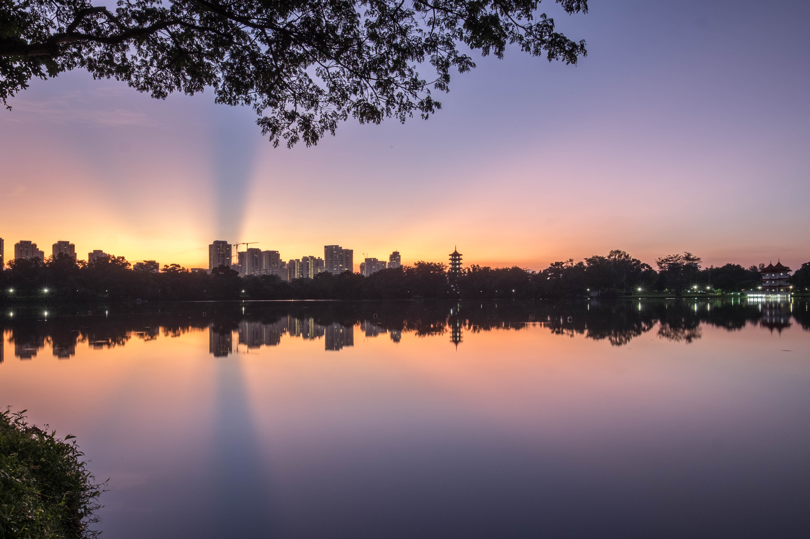

Jurong Lake Gardens, built around the beautiful Jurong Lake, will allow
for visitors to experience the natural landscapes of swamp forests and wetlands. In the
southern portion of Lakeside Garden, native wetland plant species such as the Nibung Palm
(Oncospermum tigillarium) and Lipstick Palm (Cyrtostachys renda) have been replanted to
restore the natural swamp forest habitat that was once thriving in the area.
Nature Areas
Visitors can stand on the boardwalk which overlooks into Alstonia Island, a man-made is
land planted predominantly with Alstonia spatulata. The island is greatly influenced by
the changes in the water level of Jurong Lake and visitors can observe the changes in
biodiversity with the tides. Nature trails within the gardens will showcase coastal plants
such as Clusia to create various coastal habitats for biodiversity. Immerse yourself in a
flower field with butterflies fluttering around in the Butterfly trail. Right beside the
Garden House, you will see an expansive grassland habitat with bird hides scattered around
to allow for wildlife observation at close quarters without alarming them. Take a stroll
along the meandering Rasau Walk along the water’s edge to learn more about riparian
vegetation and animals.
In the southern portion of Lakeside Garden, the Neram Streams features a
series of de-concretised and naturalised tributaries that mimic the natural streams
in the environment to channel stormwater runoff from the gardens into Jurong Lake.
The banks of the streams are planted up with semi-aquatic plants that provide a
suitable habitat for dragonflies and damselflies such as the Common scarlet (
Crocothemis servilia). Adjacent to the streams is the Heron Island which has
natural platforms that encourage our resident herons to roost and nest away from
human disturbance.
Nature Trails
Aside from these attractions, visitors can take a walk through the various nature
trails at various areas in Lakeside Garden. These self-exploratory forest trails can be
found outside the PA Water Venture building, behind the Dog Run as well as the
southern-most section of the gardens. Look out for woodland birds such as the Spotted wood owl (Strix seloputo) and Laced woodpecker (Picus vittatus) roosting amongst the tree canopies as you stroll through the forest.
There are also educational billboards placed around the gardens that provide information on the attractions and the biodiversity that can be found in the area. Use these billboards to plan a DIY trail around the gardens for your family or an educational tour for your children and students!
Tuesday to Friday 9am to 6pm; Saturday and Sunday 8am to 6pm (closed on Mondays and all PH)
Download our activity rates Here

One of Singapore’s larger public dog runs. Bring your dog to the garden and let them run wild!
8am to 10pm Daily
Navigate with our interactive map Here

| Carpark | Directions | Nearest Attractions |
|---|---|---|
| North Carpark | Turn in at Chinese Garden Road | Forest Ramble, Clusia Cove |
| South Carpark | Turn in at japanese Garden Road | ActiveSG, Grassland |
| Bus Stop | Bus No. |
|---|---|
| Stop along Yuan Ching Rd | 49, 154, 154B, 240, 246 |
| Stop along Boon Lay Way
(5 min walk to Lakeside Garden) |
180, 335 |
| Stop along Ayer Rajah Expressway (AYE)
(2 min walk to Lakeside Garden) |
30, 49, 154, 154B, 178 |